MANUAL DE USUARIO
Sistema de Registro Civil
Municipalidad Distrital de La Unión — Piura, Perú
USO INTERNO MUNICIPAL Este documento describe tareas visibles en la aplicación. No contiene credenciales ni instrucciones de servidores.
Control documental
| Campo | Valor |
|---|---|
| Documento | Manual de Usuario del Sistema de Registro Civil |
| Versión | 1.5.0 |
| Fecha | 23 de julio de 2026 |
| Estado | Borrador estructurado — pendiente de capturas reales y aprobación institucional |
| Audiencia | ADMIN, REGISTRADOR y personal de ventanilla con cuenta REGISTRADOR |
| Documento técnico relacionado | MANUAL_TECNICO.md /
MANUAL_TECNICO.html
|
| Clasificación | Uso interno municipal |
Incorporación de capturas
Cada marcador Captura pendiente — Figura X.Y indica exactamente la pantalla y el estado que se debe fotografiar. El HTML busca automáticamente las imágenes en:
docs/manual-usuario/capturas/figura-X-Y.png
Ejemplo: la Figura 2.1 se carga desde
docs/manual-usuario/capturas/figura-2-1.png.
Para incorporar una captura sin romper el diseño:
- use formato PNG;
- guarde el archivo con el nombre indicado, en minúsculas;
- no cambie el número de figura;
- recargue
MANUAL_USUARIO.html; - si utiliza otra ubicación, cambie únicamente el atributo
srcde la figura en el HTML; - no supere 1920 píxeles de ancho y oculte credenciales o datos personales innecesarios.
El contenedor limita automáticamente el ancho, conserva la proporción y evita dividir la figura al imprimir.
Contenido
- Generalidades del Sistema
- Acceso y Autenticación al Sistema
- Panel Principal e Interfaz de Navegación
- Guía Paso a Paso de los Módulos Funcionales
- Generación de Reportes y Consultas
- Gestión de Perfiles y Permisos
- Mensajes de Error y Alertas Frecuentes
- Preguntas Frecuentes (FAQ) y Soporte
1. Generalidades del Sistema
1.1. Propósito del manual y público objetivo
Este manual orienta al personal autorizado en el uso funcional del Sistema de Registro Civil de la Municipalidad Distrital de La Unión. Explica el acceso, la navegación, el registro y consulta de información, la atención de solicitudes, los reportes y las funciones administrativas.
| Perfil | Uso principal |
|---|---|
| REGISTRADOR | Digitalización, personas, actas y solicitudes, según permisos; su
identificador interno es USER |
| ADMIN | Operación completa y administración funcional |
| Ventanilla (función organizativa, no rol) | Opera con una cuenta REGISTRADOR autorizada |
| Ciudadano | Solo portal público de verificación |
El manual no comprende instalación, red, certificados, API, base de datos, restauración ni recuperación técnica. Esos procedimientos están en el Manual Técnico, secciones 2.4, 5, 6, 7, 8 y 9.
1.2. Descripción general de las funcionalidades del software
El sistema permite:
- registrar personas y actas de nacimiento, matrimonio y defunción;
- adjuntar el PDF o imagen digitalizada de un acta;
- consultar, filtrar, editar, anular o eliminar registros según permisos;
- gestionar solicitudes de copias y sus constancias;
- importar actas históricas desde Excel;
- exportar información autorizada a Excel;
- administrar usuarios, auditoría, backup y URL pública;
- ofrecer al ciudadano una verificación limitada, sin acceso al sistema interno.
1.3. Requisitos básicos del usuario
- Equipo conectado a la red autorizada de la Municipalidad.
- Google Chrome, Microsoft Edge o Mozilla Firefox actualizado.
- Resolución mínima recomendada de 1366 × 768 píxeles; para formularios extensos se recomienda 1920 × 1080.
- URL interna oficial:
https://172.16.3.21. - Cuenta personal activa. No se deben compartir cuentas.
- Lector de PDF y aplicación compatible con Excel (
.xlsx) para documentos y reportes.
Si el navegador muestra una advertencia de certificado o la página no abre, no cambie configuraciones técnicas. Registre el mensaje y comuníquese con Sistemas.
2. Acceso y Autenticación al Sistema
2.1. Enlace oficial de acceso a la plataforma
Desde un equipo conectado a la red municipal, abra:
https://172.16.3.21/login
El portal público de consulta es independiente del acceso interno y se describe en 5.3.
2.2. Interfaz de inicio de sesión y campos requeridos
Roles: ADMIN y REGISTRADOR.
- Abra la URL proporcionada por Sistemas.
- En Nombre de Usuario, escriba su cuenta.
- En Contraseña, escriba su clave.
- Pulse Ingresar.
Resultado esperado: aparece el mensaje
Bienvenido, {nombres} y se abre el
Dashboard.
| Mensaje | Qué hacer |
|---|---|
El usuario es obligatorio |
Complete el nombre de usuario |
La contraseña es obligatoria |
Complete la contraseña |
Usuario o contraseña incorrectos. |
Verifique mayúsculas y datos; no pruebe repetidamente |
La cuenta se encuentra inactiva. Contacte al administrador. |
Solicite reactivación al ADMIN |
| Demasiados intentos | Espere el tiempo indicado y contacte a soporte si persiste |
docs/manual-usuario/capturas/figura-2-1.pnghttps://172.16.3.21/login sin mostrar
credenciales.
La sesión se renueva automáticamente mientras el sistema está en uso. Si vuelve al login:
- no repita la operación que estaba guardando;
- inicie sesión otra vez;
- compruebe si el registro ya fue creado antes de volver a intentarlo.
2.3. Proceso de recuperación de contraseña
La versión actual no tiene recuperación automática por correo, enlace “Olvidé mi contraseña” ni pantalla para que el usuario cambie su propia clave. El procedimiento real es:
- El usuario solicita el cambio al ADMIN por el canal institucional.
- El ADMIN ingresa a Usuarios.
- Abre ⋮ → Editar Perfil → Cambiar Contraseña.
- Entrega la nueva clave mediante un canal institucional seguro.
- El usuario inicia sesión y confirma el acceso.
docs/manual-usuario/capturas/figura-2-2.png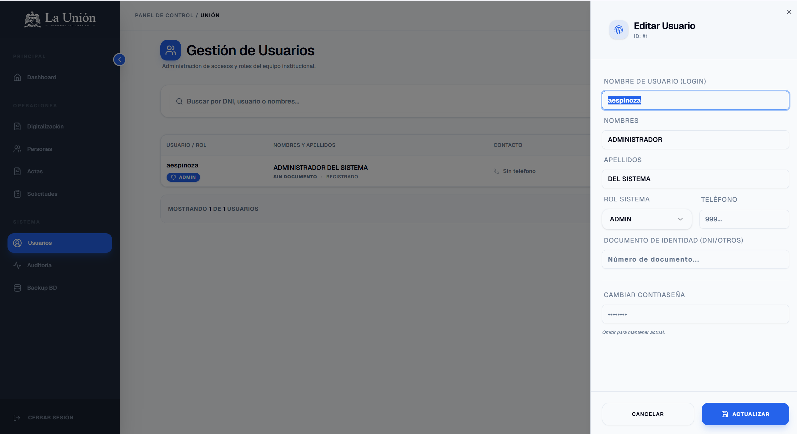
Nunca envíe contraseñas por WhatsApp, correo personal o captura de pantalla.
3. Panel Principal e Interfaz de Navegación
3.1. Vista del tablero principal (Dashboard)
Menú: Dashboard.
Roles: ADMIN y REGISTRADOR.
El tablero muestra:
- Total Actas.
- Personas.
- Solicitudes pendientes y atendidas.
- Total del mes.
- Evolución de seis meses.
- Estado de trámites.
- Accesos directos; ADMIN también ve Usuarios y Auditoría.
El Dashboard es informativo: no edita registros.
docs/manual-usuario/capturas/figura-3-1.png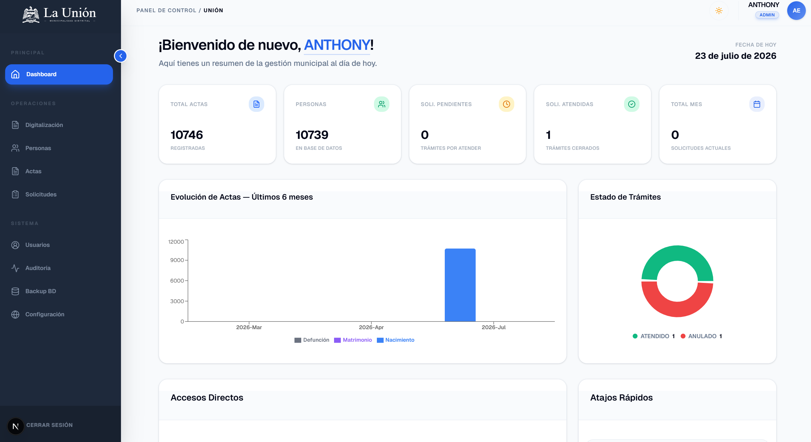
3.2. Descripción del menú de navegación
| Menú | ADMIN | REGISTRADOR | Función |
|---|---|---|---|
| Dashboard | Sí | Sí | Resumen |
| Digitalización | Sí | Sí | Registro integral de persona, acta y archivo |
| Personas | Sí | Sí | Ciudadanos |
| Actas | Sí | Sí | Consulta y acciones |
| Solicitudes | Sí | Sí | Trámites y certificados |
| Usuarios | Sí | No | Cuentas y permisos |
| Auditoría | Sí | No | Bitácora y exportación |
| Backup BD | Sí | No | Descarga de respaldo |
| Configuración | Sí | No | URL de verificación |
La opción IMPORTAR se encuentra en Actas, fuera del menú lateral. Aunque el botón pueda aparecer a un REGISTRADOR, el proceso está autorizado únicamente para ADMIN.
docs/manual-usuario/capturas/figura-3-2.png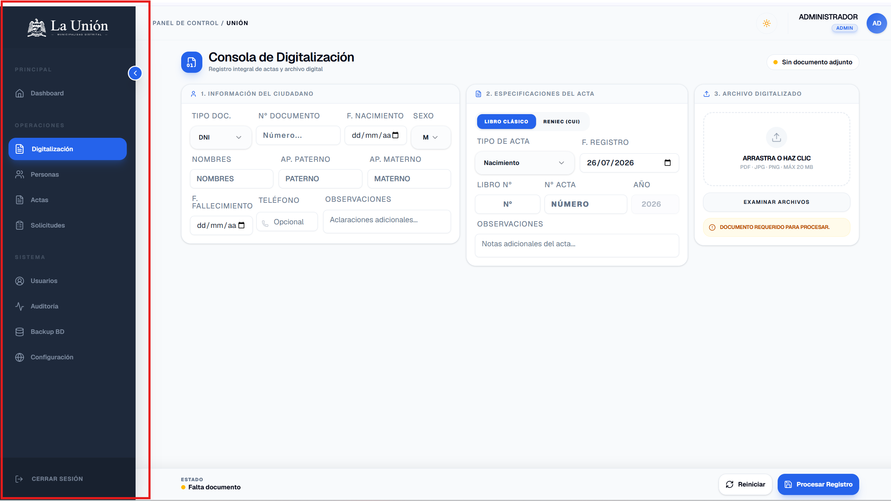
docs/manual-usuario/capturas/figura-3-3.png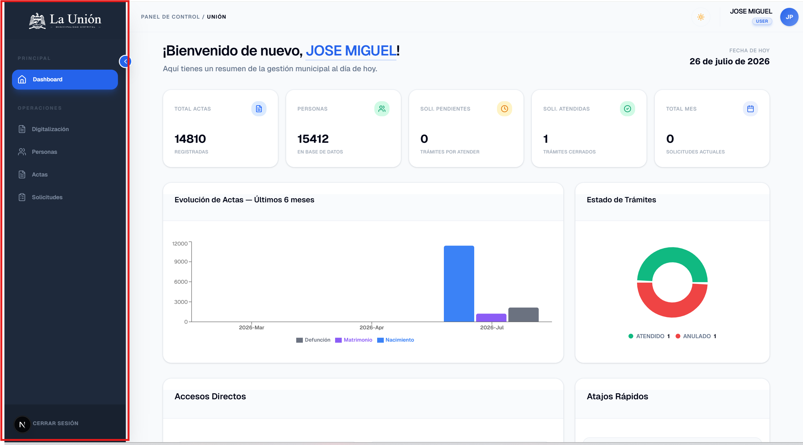
3.3. Elementos comunes de la interfaz
- Encabezado: identifica la pantalla y muestra el menú del usuario.
- Barra lateral: permite cambiar de módulo.
- Avatar del encabezado: abre opciones de la cuenta y Cerrar Sesión.
- Botón inferior de la barra lateral: permite cerrar sesión.
- Menú móvil: concentra navegación y cierre de sesión en pantallas pequeñas.
- Notificaciones: confirman resultados o muestran alertas.
- Menús ⋮: agrupan las acciones disponibles para cada registro.
Para cerrar la sesión use el avatar, el botón inferior de la barra
lateral o el menú móvil. El resultado esperado es el regreso a
/login.
La versión actual no incorpora un centro de ayuda dentro de la aplicación; este manual constituye la guía funcional.
docs/manual-usuario/capturas/figura-3-4.png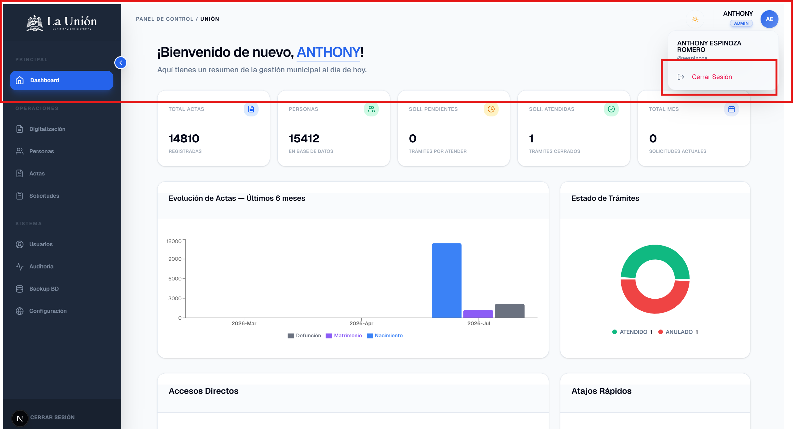
Error:
No se pudo cargar el resumen. Verifique su conexión e intente recargar la página.
Acción: recargue una vez. Si persiste, entregue a soporte fecha/hora y captura.
4. Guía Paso a Paso de los Módulos Funcionales
Cada procedimiento de este capítulo debe acompañarse con capturas reales y correlativas. Mientras no se disponga de acceso a una sesión operativa, se mantienen marcadores explícitos para evitar publicar imágenes ficticias o datos personales.
4.1. Módulo de Digitalización: registro y llenado de formularios
Menú: Digitalización, o Actas → NUEVA DIGITALIZACIÓN
Roles: ADMIN y REGISTRADOR
Precondición: contar con el documento físico y su archivo PDF/JPG/PNG.
La Consola de Digitalización registra de forma conjunta ciudadano, acta y archivo.
4.1.1. Información del ciudadano
- Seleccione el tipo de documento.
- Ingrese DNI si corresponde.
- Complete nombres y apellidos.
- Seleccione y verifique el sexo, que es obligatorio. Complete fecha de nacimiento, teléfono u observaciones cuando correspondan.
- Revise las coincidencias mostradas por el sistema.
Para una persona sin documento use SIN DOCUMENTO.
Una coincidencia por nombre no demuestra que sea la misma persona. Revise fecha, acta física y demás datos. No fusione registros por suposición.
4.1.2. Especificaciones del acta
- Seleccione Nacimiento, Matrimonio o Defunción.
- Elija el modo:
- Libro Clásico: libro y número de acta.
- RENIEC (CUI): código CUI/ID.
- Use la sugerencia AUTO solo después de verificar libro, tipo y año.
- Complete año y fecha del acta.
- En matrimonio complete Cónyuge — Obligatorio en Matrimonio.
- Agregue observaciones si son necesarias.
Formato clásico mostrado: NAC-L{libro}-{numero} o
prefijo equivalente según tipo.
4.1.3. Archivo digitalizado
- Seleccione PDF, JPG o PNG.
- Verifique que corresponda a la persona y al acta de la pantalla.
- Tamaño máximo real: 20 MB.
- Pulse Procesar Registro.
El archivo es obligatorio para este flujo.
Resultados esperados:
Nueva acta registrada con éxito.Operación exitosa: Datos y documento actualizados.
Mensajes relevantes:
| Mensaje/situación | Acción |
|---|---|
Documento Requerido |
Adjunte el archivo antes de procesar |
| Acta duplicada | No vuelva a guardar; revise el acta existente |
| Homonimia/ciudadano identificado | Compare datos antes de seleccionar |
| Error al procesar | Verifique si el acta quedó creada antes de reintentar |
docs/manual-usuario/capturas/figura-4-1.png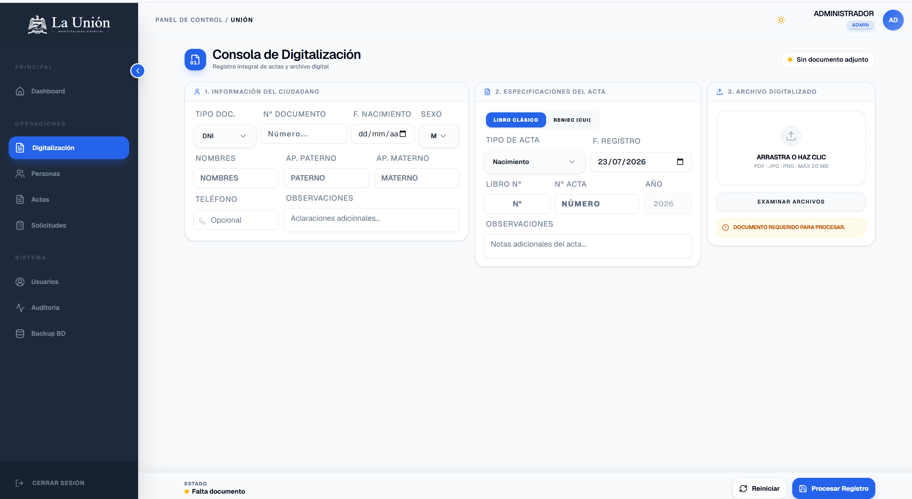
docs/manual-usuario/capturas/figura-4-2.png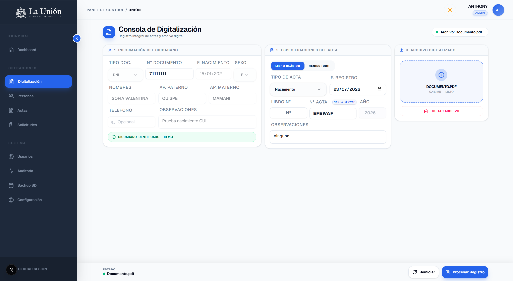
docs/manual-usuario/capturas/figura-4-3.png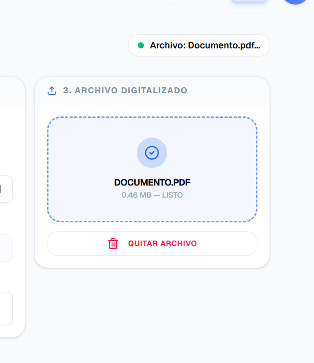
4.2. Módulo de Actas: búsqueda, filtrado y descarga
Menú: Actas
Pantalla: Registro de Actas
4.2.1. Buscar y filtrar
Puede combinar:
- DNI o nombres;
- número/código de acta;
- libro;
- año;
- tipo de acta;
- fecha desde/hasta.
Para soporte o exportación, anote todos los filtros activos.
4.2.2. Modificar, anular, reactivar o eliminar
Abra el menú ⋮ de la fila:
| Acción | Requisito | Resultado |
|---|---|---|
| Ver Detalles | Usuario autenticado | Ficha completa |
| Editar | Permiso actas_modificar |
Actualiza datos |
| Imprimir | Desde detalle | Vista /print/acta/{id} |
| Ver/Descargar documento | Documento existente | Abre archivo |
| Adjuntar/Reemplazar Archivo | Usuario autenticado | Sustituye documento vigente |
| Anular | Permiso actas_anular |
Estado ANULADO |
| Reactivar | Solo ADMIN | Estado activo |
| Eliminar | Permiso actas_eliminar |
Eliminación lógica |
Para anular, el motivo es obligatorio. Si aparece
Debe indicar el motivo de anulación, complete el campo.
Reemplazar o eliminar un documento puede borrar el archivo físico anterior. Confirme acta y archivo antes de aceptar.
4.2.3. Descargar e iniciar una importación
- EXPORTAR: genera Excel con los filtros activos.
- IMPORTAR: abre la carga masiva; solo ADMIN puede completarla.
Mensajes de exportación: Generando Excel de actas...,
Descarga lista o
Error al generar el reporte.
docs/manual-usuario/capturas/figura-4-4.png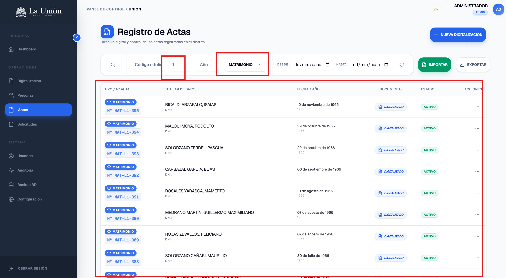
docs/manual-usuario/capturas/figura-4-5.png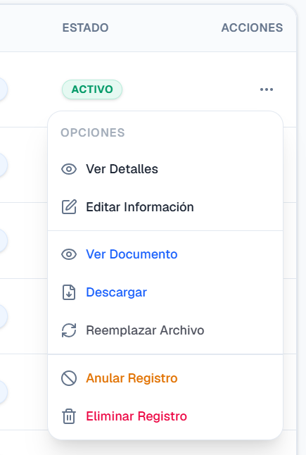
docs/manual-usuario/capturas/figura-4-6.png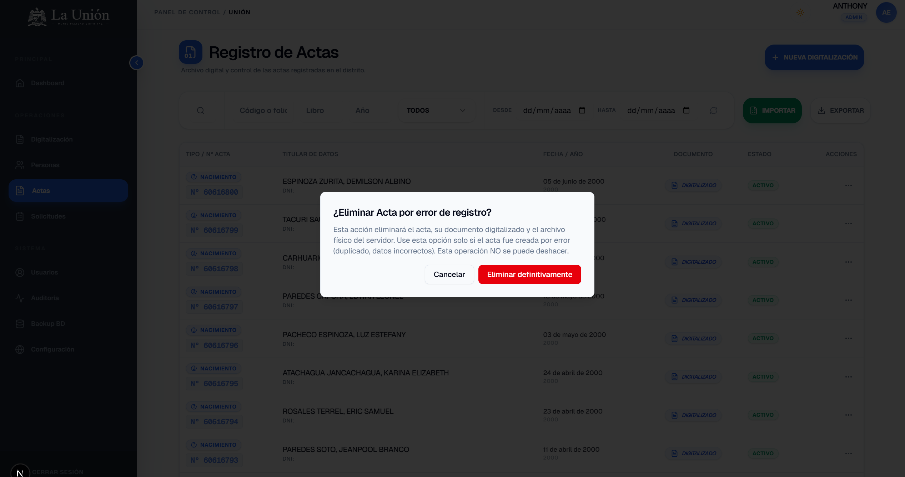
4.3. Módulo de Personas: registro, búsqueda y mantenimiento
Menú: Personas
Pantalla: Ciudadanos
4.3.1. Buscar antes de crear
- Busque por DNI.
- Busque también por nombres y apellidos.
- Revise coincidencias e historial antes de registrar.
4.3.2. Registrar
- Pulse REGISTRAR CIUDADANO.
- Complete nombres y apellidos obligatorios.
- Seleccione tipo de documento; use SIN DOCUMENTO si corresponde.
- Seleccione y verifique el sexo, que es obligatorio.
- Complete los demás datos disponibles.
- Revise y guarde.
4.3.3. Editar, eliminar y exportar
- Editar requiere
personas_modificar. - Eliminar requiere
personas_eliminary puede rechazarse si la persona tiene actas. - EXPORTAR genera Excel del resultado filtrado.
No elimine una persona para resolver un duplicado sin verificar antes sus actas vinculadas.
docs/manual-usuario/capturas/figura-4-7.png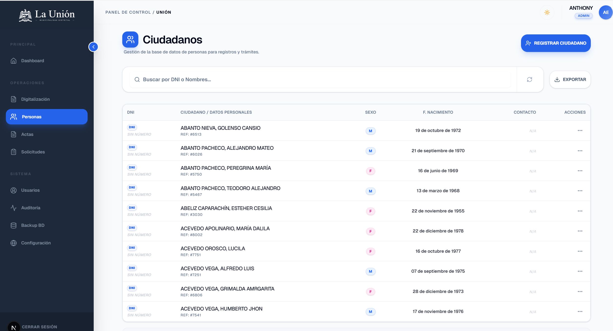
docs/manual-usuario/capturas/figura-4-8.png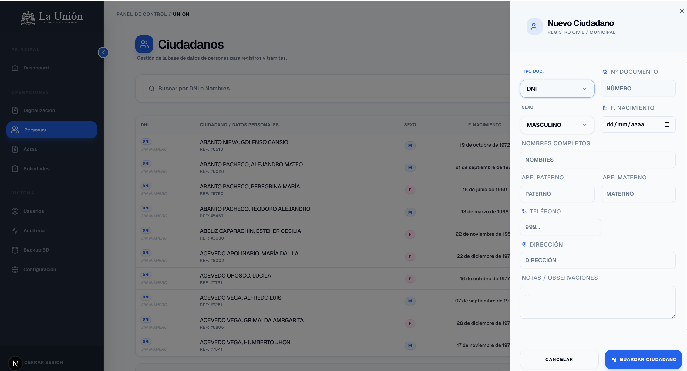
docs/manual-usuario/capturas/figura-4-9.png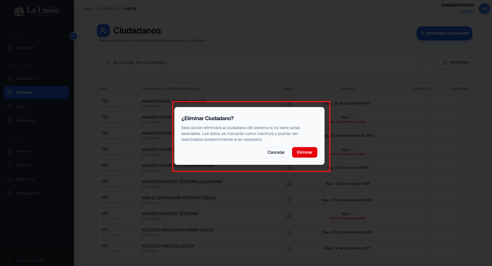
4.4. Módulo de Solicitudes: procesamiento y flujo de atención
Menú: Solicitudes
Pantalla: Trámites y Certificados
4.4.1. Crear una solicitud
- Pulse NUEVA SOLICITUD.
- Busque o registre al solicitante. El DNI debe tener 8 dígitos.
- Ingrese el tipo o concepto de la solicitud.
- Agregue las actas solicitadas, cantidad y precio cuando corresponda.
- Revise el resumen.
- Guarde.
Resultado esperado: solicitud en estado PENDIENTE.
4.4.2. Atender, anular o eliminar
- Atender: desde el detalle; resultado
Solicitud atendida correctamentey estado ATENDIDO. - Anular: indique motivo; estado ANULADO.
- Eliminar: confirme solo cuando corresponda; el registro deja de aparecer en listados normales.
4.4.3. Imprimir documento o cargo
Desde el detalle pulse Imprimir Documento / Cargo.
La impresión incluye el número de constancia y un enlace de verificación. Revise antes de entregar:
- solicitante;
- actas/cantidades;
- estado;
- total;
- número de constancia.
El documento impreso puede contener DNI completo. Debe entregarse únicamente al destinatario autorizado.
4.4.4. Filtros y exportación
Puede filtrar por estado, texto y fechas. EXPORTAR utiliza los filtros activos.
docs/manual-usuario/capturas/figura-4-10.png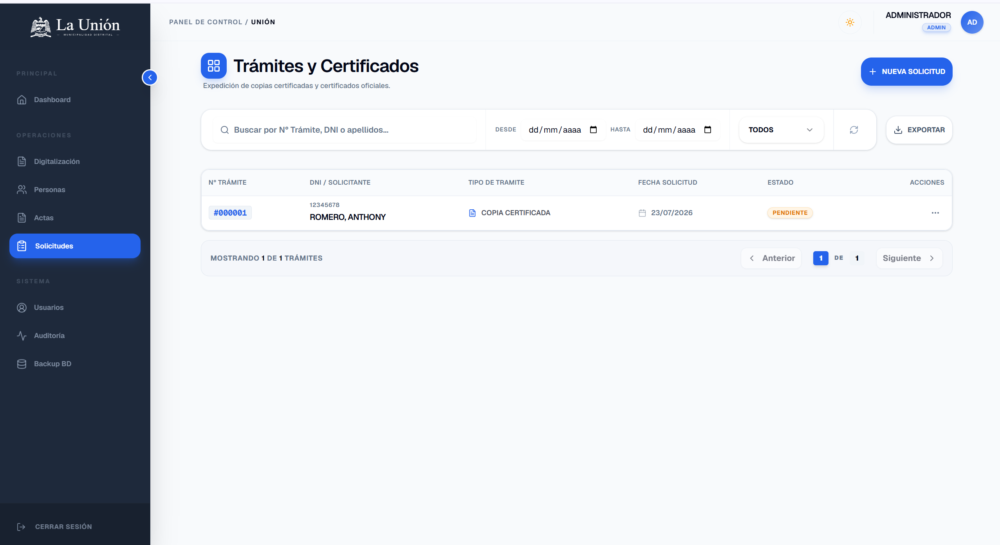
docs/manual-usuario/capturas/figura-4-11.png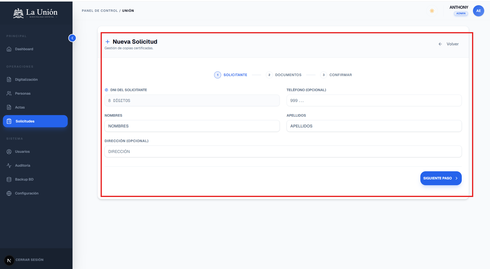
docs/manual-usuario/capturas/figura-4-12.png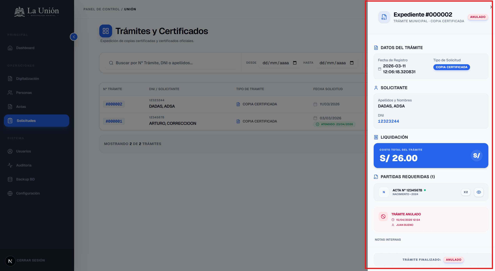
docs/manual-usuario/capturas/figura-4-13.png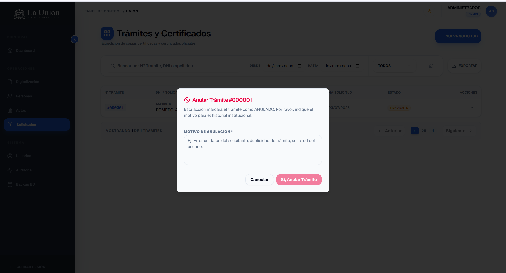
4.5. Módulo de Importación Masiva de Actas Históricas
Ruta funcional: Actas → IMPORTAR
Pantalla: Carga Masiva de Actas
Rol: solo ADMIN
4.5.1. Preparar archivos
- Prepare el Excel con las columnas indicadas a continuación; la plantilla descargable no está disponible actualmente.
- Use
.xlsxo.xls; CSV no está admitido. - Si incluye documentos, prepare un ZIP opcional conservando nombres y carpetas.
- Máximo: 30.000 filas y 500 MB por archivo.
Campos obligatorios por fila:
nombres,apellido_paterno,apellido_materno;tipo_acta:NACIMIENTO,MATRIMONIOoDEFUNCION;fecha_actaen formatoAAAA-MM-DD;cui, o bienlibroynumero_acta;anioes opcional; si falta, se obtiene del año defecha_acta.
Campos relevantes opcionales:
dni,tipo_documento,sexo,fecha_nacimiento,telefono;persona_observaciones,acta_observaciones;nombre_archivo_pdf,carpeta_ruta;- en matrimonio:
conyuge_nombres,conyuge_apellido_paterno,conyuge_apellido_maternoobligatorios, y demás camposconyuge_*cuando existan.
sexo, si se proporciona, acepta solo M o
F. Si queda vacío, la versión actual asigna M.
No inicie nuevas cargas históricas hasta que Sistemas confirme
la corrección de esta regla.
nombre_archivo_pdf debe coincidir exactamente con el
archivo del ZIP. Si hay nombres repetidos, use carpeta_ruta
para identificar la ruta interna.
4.5.2. Ejecutar
- Seleccione el Excel.
- Seleccione el ZIP si corresponde.
- Pulse INICIAR CARGA una sola vez.
- Espere; el cliente admite hasta aproximadamente 16 minutos y 40 segundos.
- No cierre la pestaña ni repita la carga mientras procesa.
4.5.3. Interpretar resultados
| Estado | Significado | Acción |
|---|---|---|
OK |
Persona/acta procesada | Verifique muestra de registros |
OMITIDO |
Acta ya existente | No duplicar; revisar mensaje |
OMITIDO_DOC |
Acta existente sin documento; archivo vinculado | Verificar documento |
ERROR |
Fila rechazada | Corregir esa fila y reintentar solo lo necesario |
Después puede usar GENERAR REPORTE EXCEL y IR AL REGISTRO DE ACTAS.
Conserve el original y el reporte. Para reintentar, cree otro Excel únicamente con filas
ERRORcorregidas. Las filas sin DNI requieren revisión humana y no deben cargarse hasta corregir la regla automática de coincidencia.
4.5.4. Datos para soporte de importación
- nombre del Excel y ZIP;
- total de filas;
- hora de inicio;
- reporte generado;
- filas
ERRORy mensaje exacto; - captura de pantalla.
No envíe el archivo completo por canales no autorizados: contiene datos personales.
docs/manual-usuario/capturas/figura-4-14.png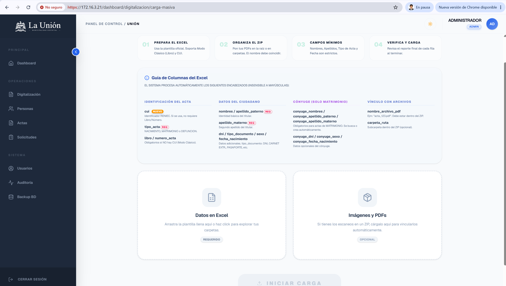
docs/manual-usuario/capturas/figura-4-15.png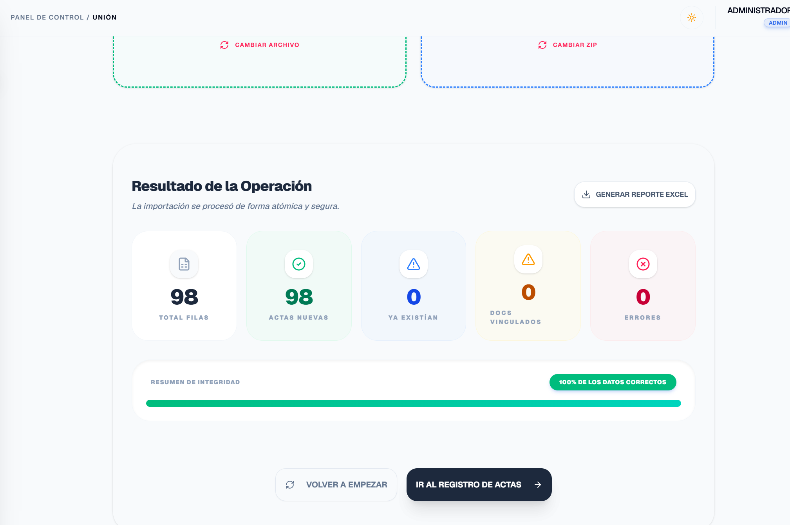
OK, OMITIDO,
OMITIDO_DOC y ERROR.
5. Generación de Reportes y Consultas
5.1. Configuración de filtros para la emisión de reportes
- Abra Actas, Personas, Solicitudes o Auditoría.
- Complete únicamente los filtros que correspondan a la consulta.
- Revise que el listado visible represente el universo que desea exportar.
- Anote los filtros cuando el reporte sea parte de una atención o incidencia.
docs/manual-usuario/capturas/figura-5-1.png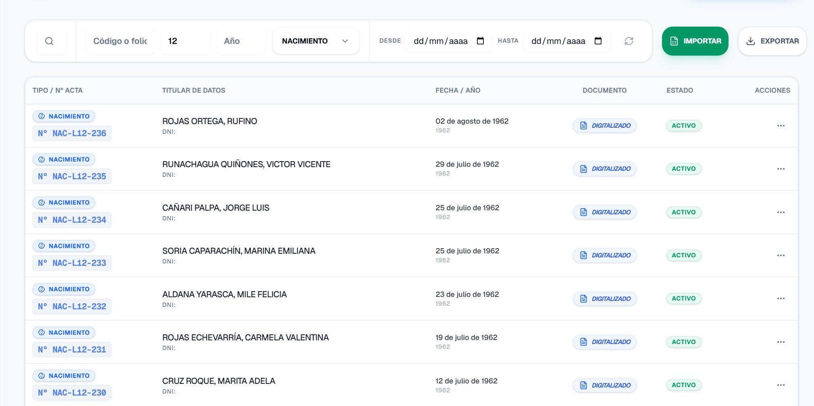
5.2. Exportación de información a los formatos permitidos
| Módulo | Acción | Formato disponible | Contenido |
|---|---|---|---|
| Actas | EXPORTAR | Excel .xlsx |
Actas con filtros activos |
| Personas | EXPORTAR | Excel .xlsx |
Ciudadanos filtrados |
| Solicitudes | EXPORTAR | Excel .xlsx |
Trámites filtrados |
| Auditoría | EXPORTAR | Excel .xlsx |
Bitácora filtrada; solo ADMIN |
| Carga masiva | GENERAR REPORTE EXCEL | Excel .xlsx |
Resultado del lote |
La versión actual no exporta reportes tabulares en PDF ni CSV. Los PDF o imágenes vinculados a las actas son documentos digitalizados, no reportes. Las vistas de impresión de actas y solicitudes son documentos imprimibles, no una exportación tabular.
Buenas prácticas:
- revise filtros antes de exportar;
- espere el mensaje de descarga completa;
- abra el archivo y verifique encabezados/cantidad;
- guárdelo en carpeta institucional protegida;
- no lo envíe por correo personal ni mensajería no autorizada.
docs/manual-usuario/capturas/figura-5-2.png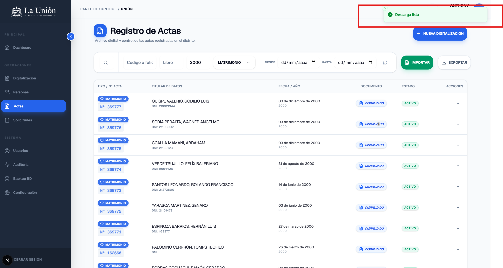
docs/manual-usuario/capturas/figura-5-3.png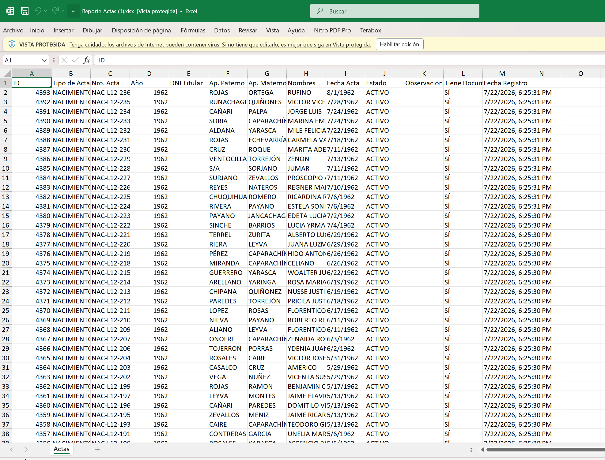
.xlsx generado, abierto con datos de prueba o con datos
personales ocultos.
5.3. Consulta pública de constancias
El portal público es independiente del login municipal. El ciudadano no necesita usuario.
- Abra la URL de verificación impresa en el documento.
- Ingrese el número numérico de constancia, normalmente impreso con seis dígitos y ceros iniciales, o abra el enlace completo. El campo acepta hasta 10 dígitos.
- Pulse verificar.
El portal puede mostrar:
- validez y estado;
- tipo de trámite;
- fechas;
- cantidad/total;
- nombre parcialmente enmascarado;
- nombre completo del trabajador que atendió, cuando la solicitud está ATENDIDA.
No muestra el contenido de las actas ni el DNI completo del solicitante.
| Mensaje | Acción |
|---|---|
Ingrese el número de constancia. |
Complete el número |
No se encontró ninguna constancia... |
Verifique el número impreso y sus ceros iniciales |
Error al verificar la constancia. |
Intente una vez más y reporte URL/hora |
| Demasiadas consultas | Espere antes de repetir |
Una respuesta válida confirma el registro en el sistema; no reemplaza la revisión del documento físico cuando esta sea necesaria.
docs/manual-usuario/capturas/figura-5-4.png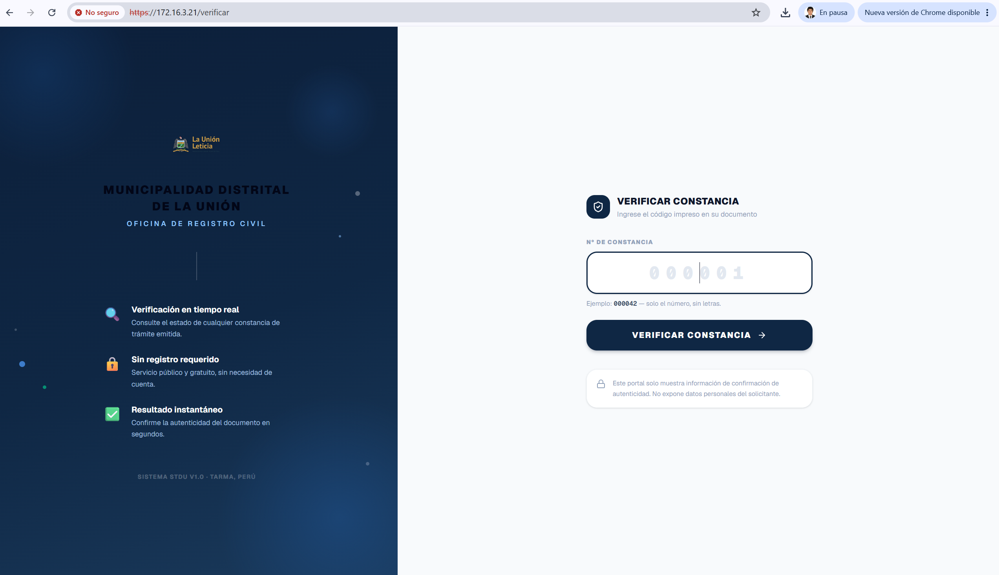
/verificar sin datos ingresados.
docs/manual-usuario/capturas/figura-5-5.png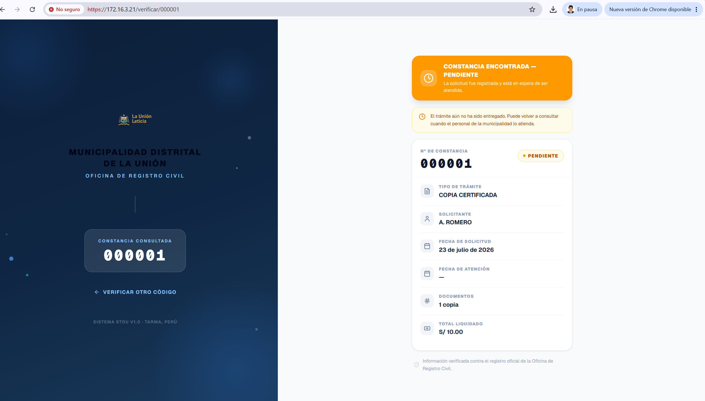
6. Gestión de Perfiles y Permisos
6.1. Panel de administración de usuarios institucionales
Menú: Usuarios
Rol: ADMIN
Crear usuario:
- Pulse NUEVO USUARIO.
- Complete nombres, apellidos, contraseña y rol; el sistema genera el nombre de usuario.
- Si el rol es REGISTRADOR, asigne permisos.
- Guarde y entregue la cuenta por canal seguro.
Acciones del menú ⋮:
- Editar Perfil; dentro de este formulario se encuentra Cambiar Contraseña;
- Configurar Permisos;
- Desactivar Acceso / Activar Acceso;
- eliminar, cuando la aplicación lo permita.
No desactive ni elimine la cuenta propia durante una sesión administrativa.
docs/manual-usuario/capturas/figura-6-1.png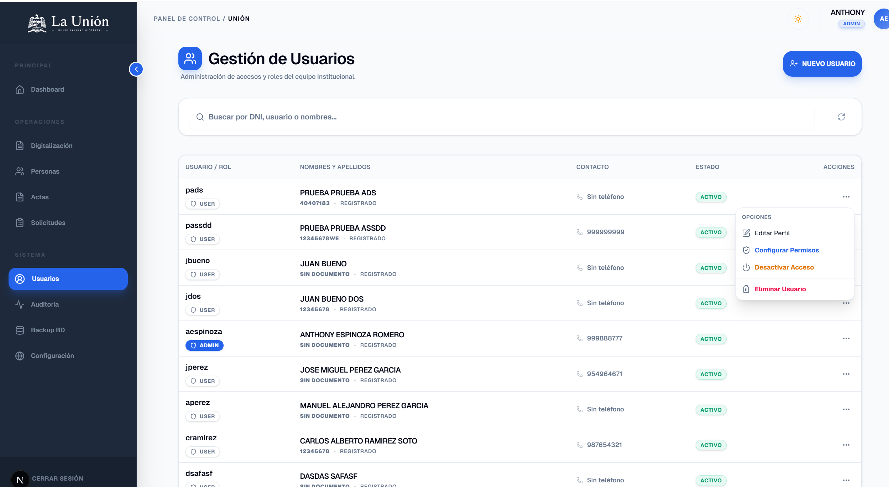
docs/manual-usuario/capturas/figura-6-2.png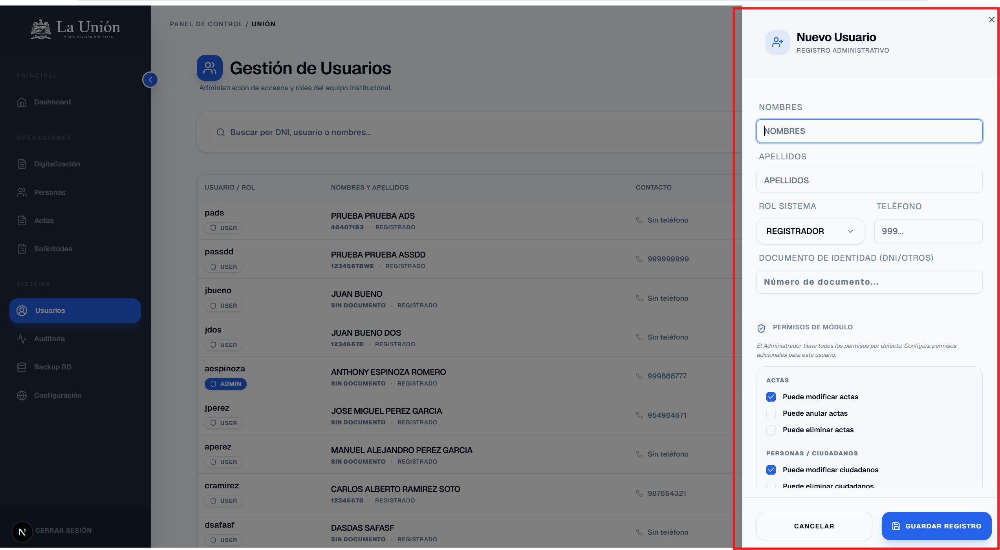
6.2. Asignación de roles y bandejas de trabajo
| Perfil | Bandejas y funciones |
|---|---|
| ADMIN | Dashboard, Digitalización, Personas, Actas, Solicitudes, Usuarios, Auditoría, Backup BD, Configuración e importación |
| REGISTRADOR | Dashboard, Digitalización, Personas, Actas y Solicitudes, según permisos asignados |
Permisos configurables para REGISTRADOR:
- modificar, anular o eliminar actas;
- modificar o eliminar personas.
ADMIN puede reactivar actas y gestionar usuarios, auditoría, backup,
configuración e importación. El identificador técnico del perfil
REGISTRADOR es USER.
- En Usuarios, abra el menú ⋮ de la cuenta.
- Seleccione Configurar Permisos.
- Active solo las funciones aprobadas para el puesto.
- Guarde y solicite al usuario que vuelva a ingresar si el cambio no aparece en su sesión.
docs/manual-usuario/capturas/figura-6-3.png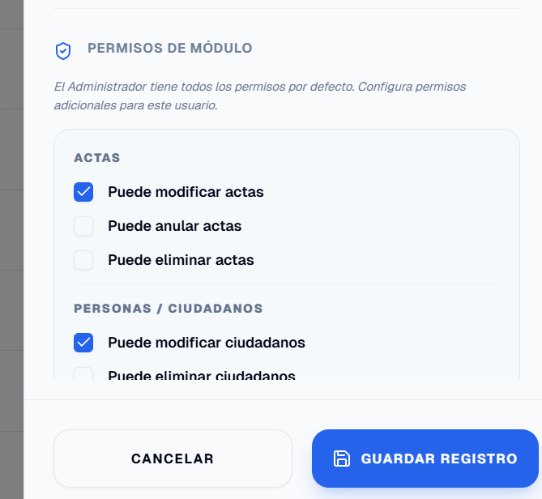
docs/manual-usuario/capturas/figura-6-4.png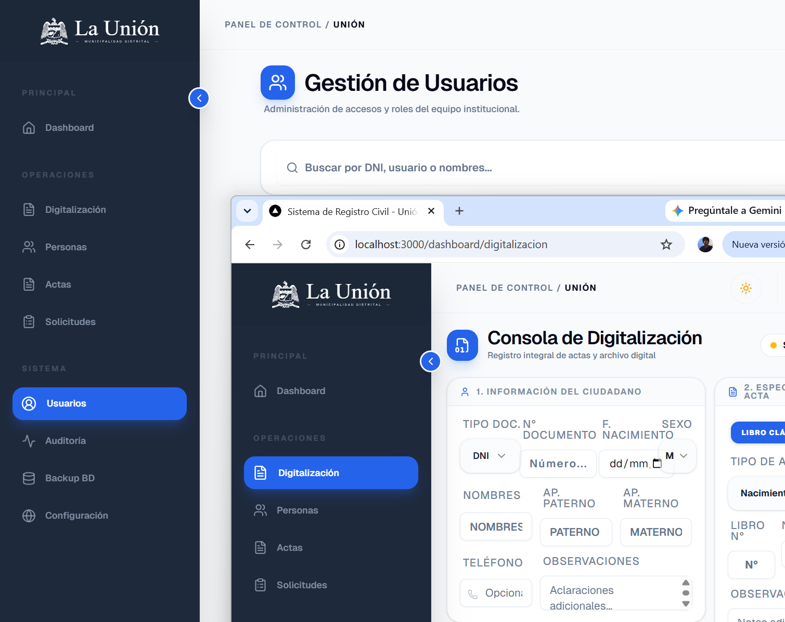
6.3. Otras funciones administrativas
6.3.1. Auditoría
Menú: Auditoría
Pantalla: Bitácora de Auditoría
Permite filtrar por usuario, fechas, módulo y operación; revisar quién hizo qué y exportar resultados.
La bitácora puede contener IP y datos operativos. No debe compartirse fuera del personal autorizado.
docs/manual-usuario/capturas/figura-6-5.png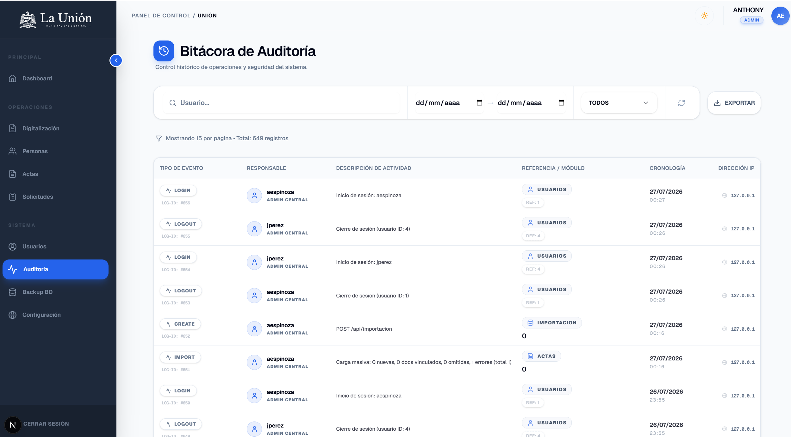
6.3.2. Descargar backup
Menú: Backup BD
Rol: ADMIN
- Revise la información mostrada.
- Pulse DESCARGAR BACKUP AHORA.
- Espere
Backup descargado correctamente. - Entregue el archivo al responsable técnico por el canal aprobado.
El archivo SQL contiene datos confidenciales. El usuario funcional no debe intentar restaurarlo. Restauración, validación y retención están en el Manual Técnico, sección 9.1.
docs/manual-usuario/capturas/figura-6-6.png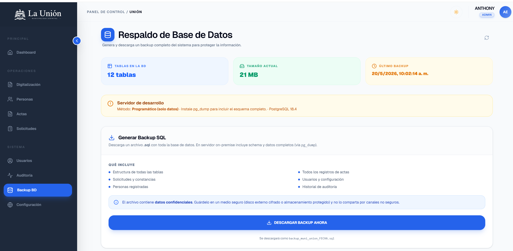
6.3.3. Configuración de URL pública
Menú: Configuración
Rol: ADMIN
- Obtenga del área de Sistemas la URL aprobada.
- Escríbala en URL base.
- Revise el ejemplo mostrado.
- Pulse Guardar URL pública.
- Confirme
URL pública guardada.
Cambiar este valor solo modifica el enlace impreso. No configura dominio, DNS, certificado ni acceso a Internet. Esas tareas corresponden a Sistemas.
docs/manual-usuario/capturas/figura-6-7.png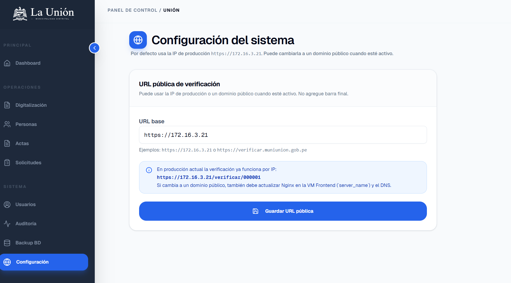
7. Mensajes de Error y Alertas Frecuentes
7.1. Alertas de validación de datos
| Alerta o situación | Causa probable | Acción del usuario |
|---|---|---|
| Campo obligatorio resaltado | Falta información requerida | Complete el campo y revise nuevamente |
| DNI inválido | No contiene 8 dígitos | Corrija el número; no agregue letras ni espacios |
Documento Requerido |
No se adjuntó el archivo del acta | Seleccione PDF, JPG o PNG |
| Archivo rechazado | Tipo no admitido o más de 20 MB | Use un formato permitido y reduzca el tamaño |
| Acta duplicada | Ya existe el número/año o CUI | Busque el acta existente; no vuelva a guardar |
| Motivo obligatorio | Se intentó anular sin justificar | Registre el motivo antes de confirmar |
| Persona no se elimina | Tiene actas vinculadas | Revise sus relaciones; no fuerce la eliminación |
Fila ERROR en importación |
Datos incompletos o inválidos | Corrija solo la fila indicada y genere un nuevo archivo |
docs/manual-usuario/capturas/figura-7-1.png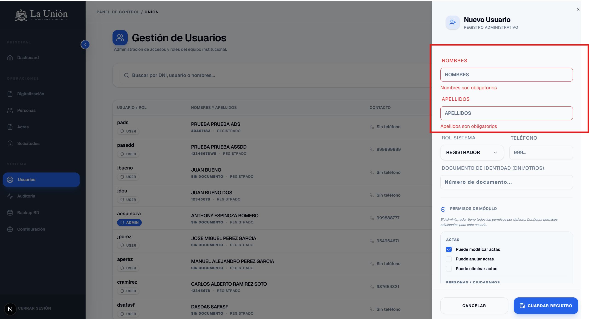
docs/manual-usuario/capturas/figura-7-2.png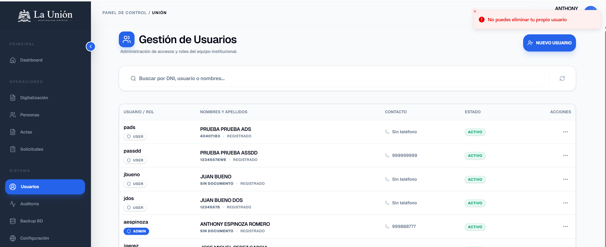
7.2. Mensajes de error del sistema o pérdida de conexión
| Situación | Causa posible | Procedimiento de atención |
|---|---|---|
| No abre la aplicación | Red o servicio | Verifique la conexión municipal y reporte; no cambie configuraciones técnicas |
| Sesión volvió al login | Expiración | Ingrese y compruebe si la operación anterior terminó |
| 401 / sesión no válida | Sesión ausente o expirada | Inicie sesión nuevamente |
| Acceso denegado / 403 | Rol o permiso | Solicite revisión al ADMIN; no use otra cuenta |
| Dashboard no carga | Pérdida de conexión o API | Recargue una vez y reporte fecha/hora si persiste |
| Importación se corta | Tamaño, tiempo de espera o servicio | Revise si procesó, conserve el reporte y no repita a ciegas |
| Exportación falla | Error temporal o filtros | Reintente una vez y entregue los filtros a soporte |
| Ciudadano no verifica | Número, URL o servicio | Revise el número impreso y reporte URL/hora |
| Backup no descarga | Permiso o servicio | No intente restaurar; contacte al área técnica |
Si la conexión se pierde durante un guardado, primero consulte el listado correspondiente. Repetir la operación sin verificar puede producir duplicados.
docs/manual-usuario/capturas/figura-7-3.png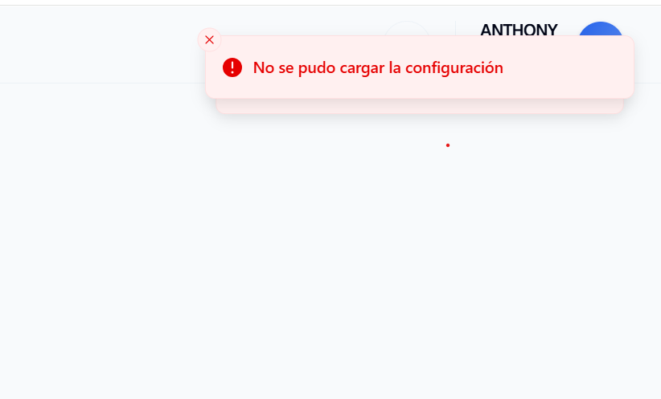
docs/manual-usuario/capturas/figura-7-4.png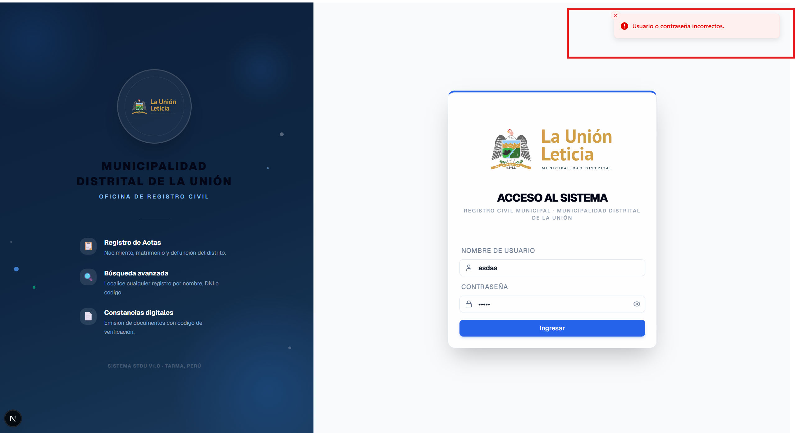
8. Preguntas Frecuentes (FAQ) y Soporte
8.1. Respuestas a las consultas funcionales más frecuentes
¿Puedo recuperar mi contraseña desde el login?
No. La versión actual no ofrece recuperación automática. Solicite el
cambio a un ADMIN por el canal institucional.
¿Por qué no veo Usuarios, Auditoría, Backup BD o
Configuración?
Esas opciones corresponden al perfil ADMIN.
¿Por qué no puedo editar, anular o eliminar?
El perfil REGISTRADOR necesita permisos específicos. Solicite al ADMIN
la revisión de su cuenta.
¿Qué hago si no sé si un registro se guardó?
No repita inmediatamente la operación. Busque primero la persona, el
acta o la solicitud.
¿Los reportes se generan en PDF o CSV?
No. Los reportes tabulares disponibles se descargan en Excel
.xlsx. Las vistas imprimibles y los documentos
digitalizados son funciones diferentes.
¿Puedo cargar un CSV o descargar una plantilla de
importación?
No. La importación acepta .xlsx o .xls; la
plantilla descargable no está disponible actualmente.
¿Qué significa homonimia?
Son personas distintas con nombres iguales o similares. Revise DNI,
fecha, acta física y demás datos antes de seleccionar.
¿Qué estados utiliza el sistema?
| Objeto | Estados |
|---|---|
| Acta | ACTIVO, OBSERVADO, ANULADO |
| Solicitud | PENDIENTE, ATENDIDO, ANULADO |
| Importación | OK, OMITIDO, OMITIDO_DOC, ERROR |
| Usuario | Activo o inactivo |
La aplicación no incorpora un botón de ayuda ni un centro de soporte interno en la versión actual. Consulte este manual.
8.2. Canales de atención y soporte
| Canal | Dato institucional |
|---|---|
| Área responsable | Oficina de Informática |
| Contacto funcional o técnico | Coordinar directamente con el encargado de la Oficina de Informática |
| Correo, anexo, mesa de ayuda y horario | Solicitar al encargado de la Oficina de Informática los datos institucionales vigentes |
Al reportar un problema, entregue:
- fecha y hora;
- usuario y rol, sin contraseña;
- módulo o pantalla;
- acción y botón pulsado;
- mensaje literal;
- captura ocultando datos que no sean necesarios;
- filtros utilizados;
- número de acta, solicitud o constancia cuando corresponda;
- si es importación, reporte de errores y nombres de archivos;
- si el problema comenzó después de un cambio conocido.
Reglas de seguridad:
- use su cuenta personal y cierre sesión al terminar;
- bloquee el equipo al alejarse;
- no comparta contraseña, cookies ni capturas con datos sensibles;
- no descargue reportes o backups en equipos personales;
- no envíe archivos con datos personales por canales no autorizados;
- informe accesos o cambios sospechosos.
Para red, certificado, backup, API o servidores, el personal técnico consulta el Manual Técnico, secciones 2.4, 5, 6, 7 y 9.
Fin del Manual de Usuario — versión 1.5.0